ドラゴンボール人造人18號。
限量發售，預定時間3025年4月4日。
特製ジオラマ台座とネームプレート
フィギュアの世界観を凝縮した、
リアルな質感の芝生ジオラマベースを採用。
さらに、そのベースを支える重厚なブラックとゴールドの特製八角形台座が付属します。
台座正面には「DRAGON BALL Z ANDROID 18 & PUAR」の文字が刻印された金属調の高級ネームプレートが輝き、
コレクターズアイテムとしての所有欲を深く満たします。
喜歡記得也分享給朋友喔。
子貓玲/CoNeColin
2025/12/14
#人造人間18號 #ドラゴンボール #七龍珠 #AI模型 #conecolin
子貓玲/CoNeCoLin | Original Date: 2025-12-14 16:25:28
 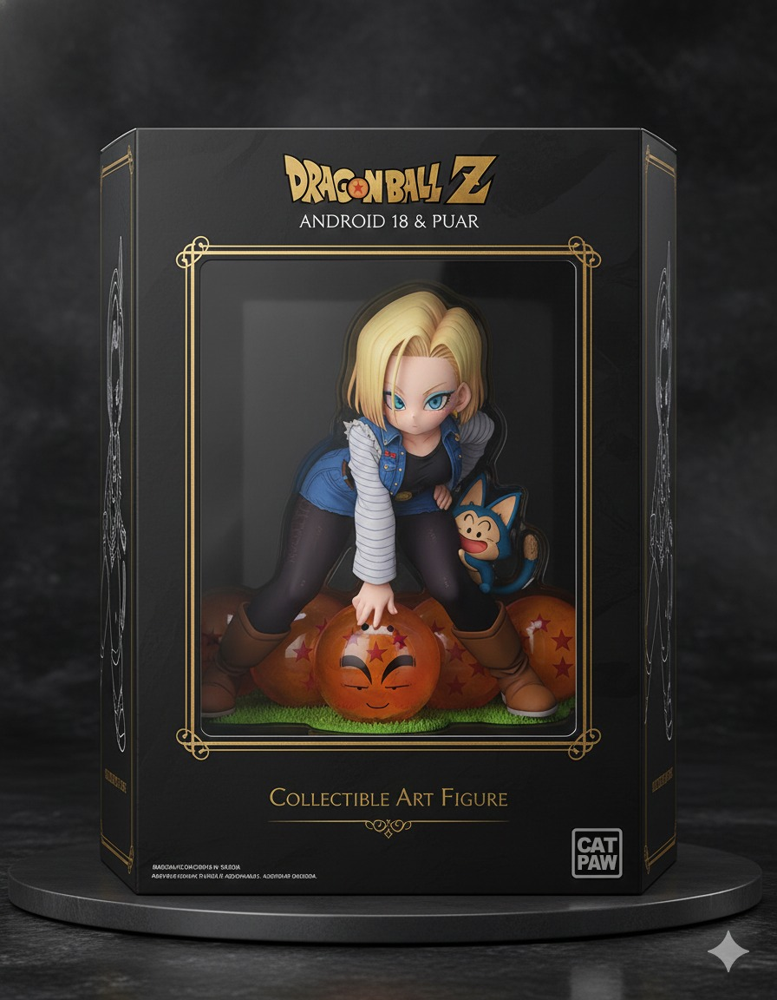
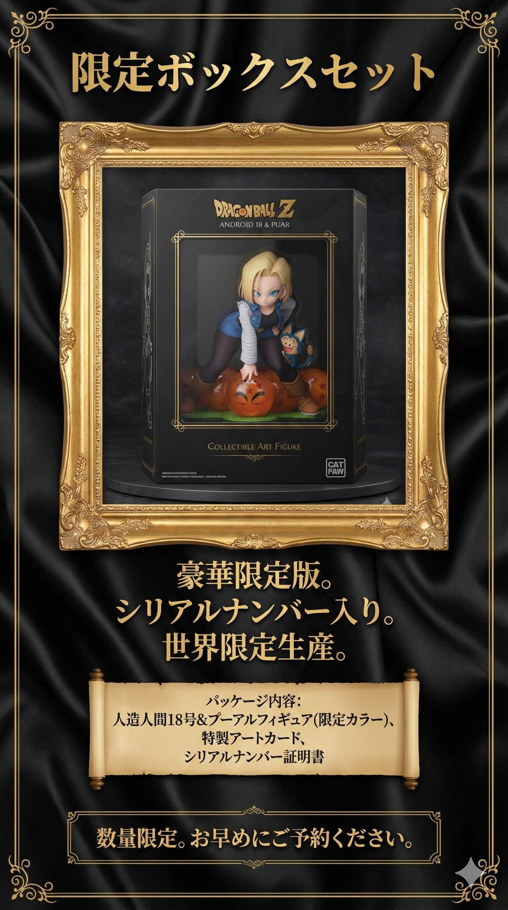
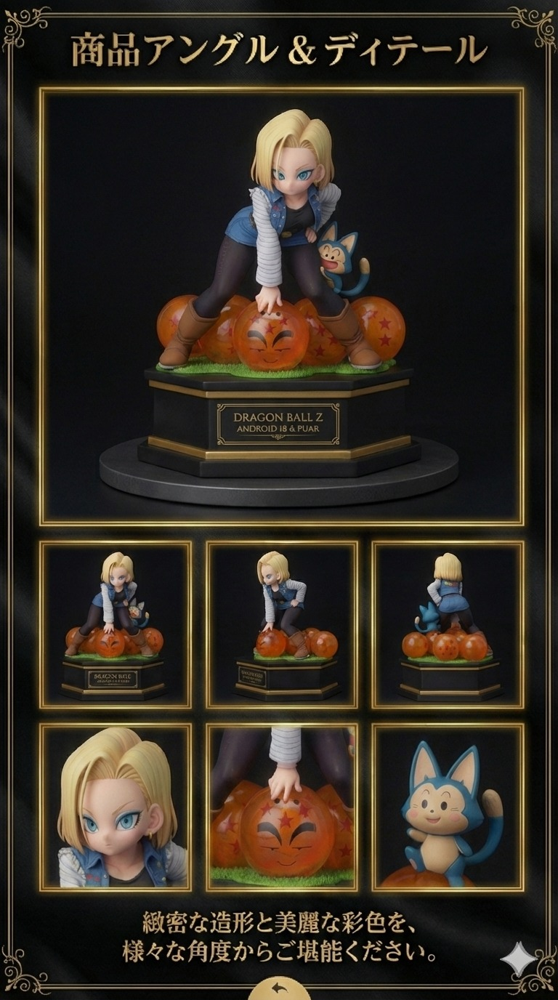
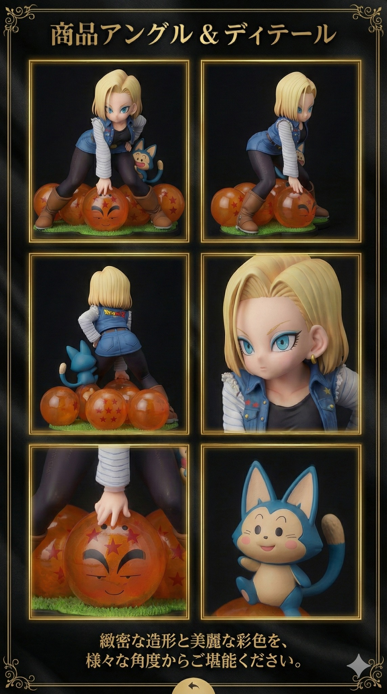
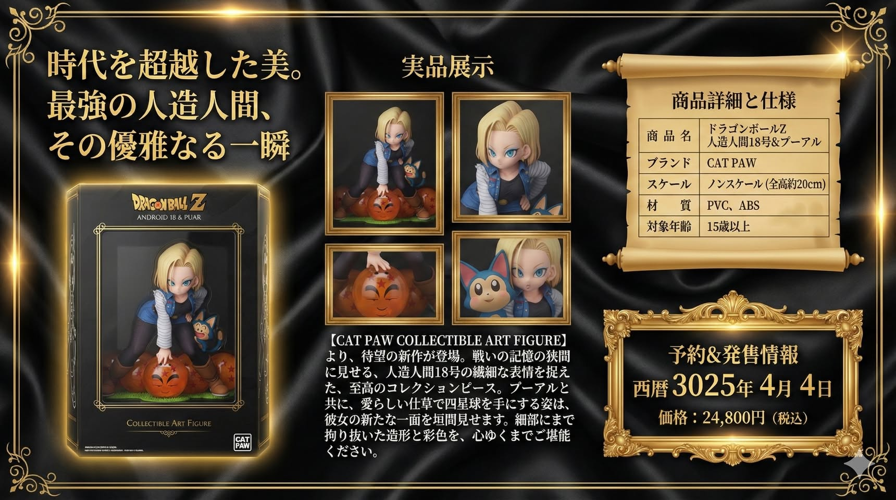
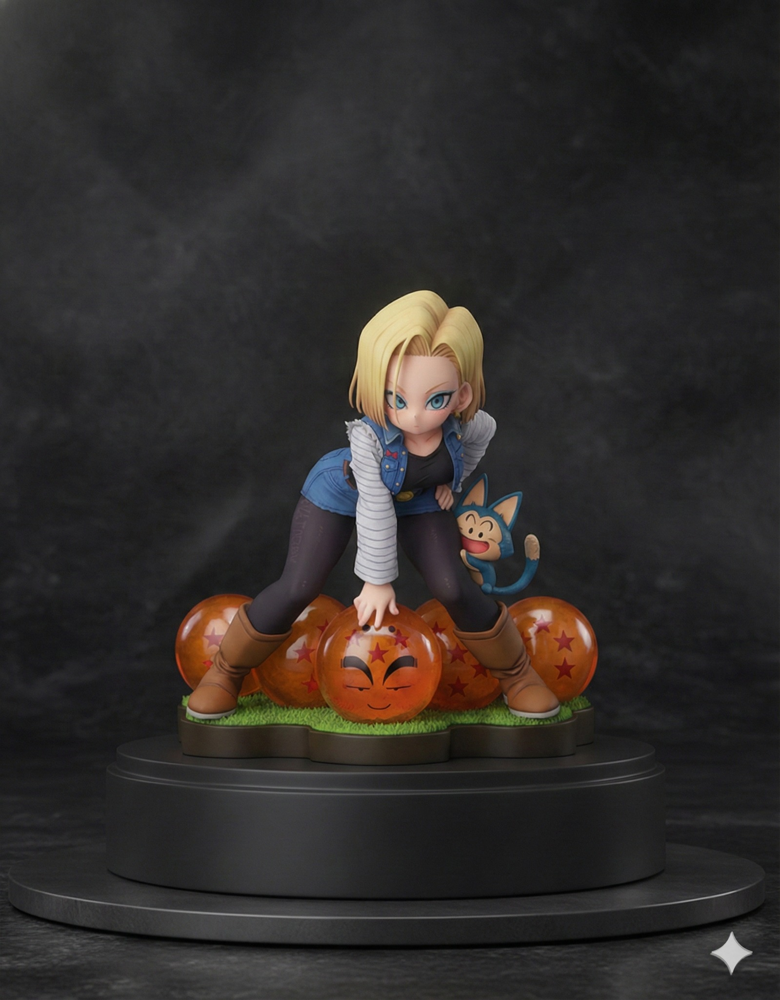
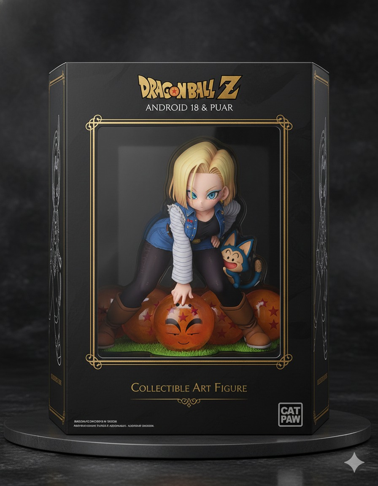
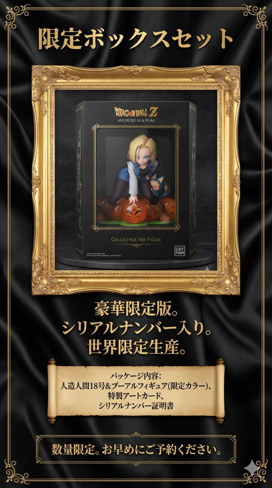
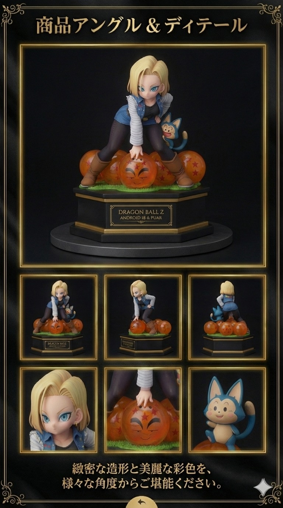
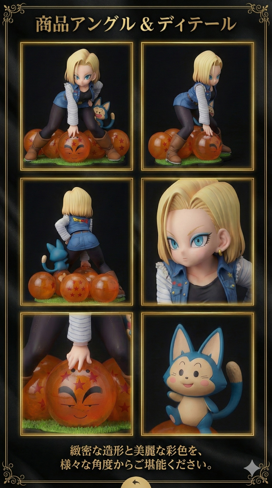
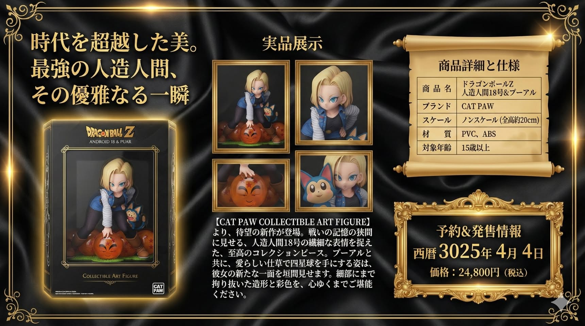
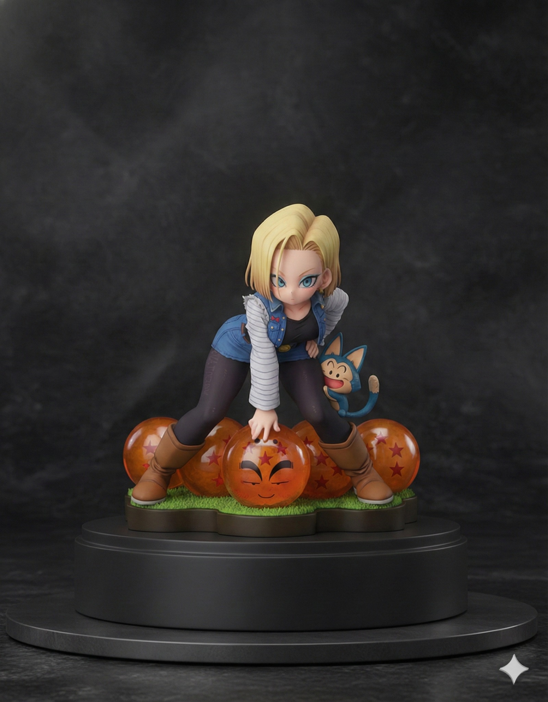